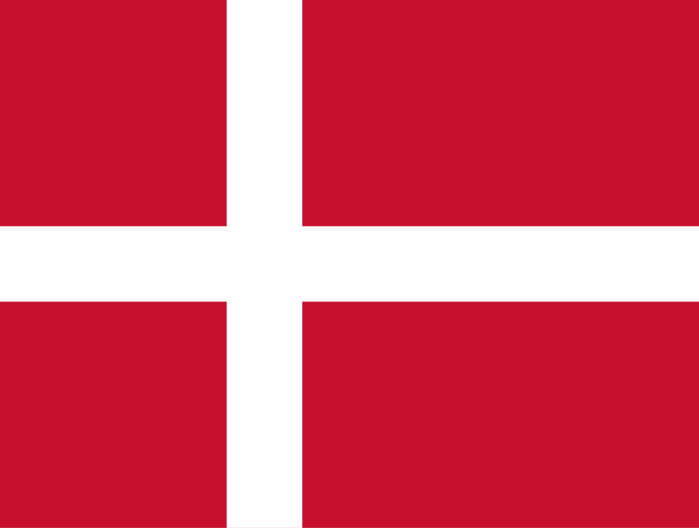

Links
På denne side kan du finde div. links, både til danske og internationale jernbanesider. Har du et link som kan være interessant for andre, og som ikke findes her, kan du sende linket til webmaster(@)dmju.dk eller formand(@)dmju.dk.
- Morop – Verband der Modelleisenbahner und Eisenbahnfreunde Europas – www.morop.eu
- BDEF – Bundesverband Deutscher Eisenbahn-Freunde e. V. (Tyskland) – www.bdef.de
- Smv-aktuell – Sächsische Modellbahner Vereinigung (Tyskland) – smv-aktuell.de
- MJF – Modelljernbaneforeningen (Norge) – www.mjf.no
- Eisenbahn Amateur – Schweizerischer Verband Eisenbahn-Amateur (Schweiz) – www.eisenbahn-amateur.ch
- Voemec – Dachverband der österreichischen Modelleisenbahnclubs (Østrig) – www.voemec.at
- Febelrail – De portaalsite voor de Belgische treinliefhebber (Belgien) – www.febelrail.be
- FCAF – Federacio Catalana D’amics del Ferrocaril (Spanien) – www.fcaf.cat
- Polski Zwiazek Modelarzy Kolejowych (Polen) – www.pzmk.org.pl

- Dansk Jernbane Klub (DJK) – links til alt om jernbaner og modeljernbaner – www.jernbaneklub.dk
- Veteranbanen Bryrup–Vrads – www.veteranbanen.dk
- Mariager–Handest Veteranjernbane – www.mhvj.dk
- Danmarks Jernbanemuseum – www.jernbanemuseet.dk
- De Bornholmske Jernbaner Foreningen – www.dbj.dk
- Djurslands Jernbanemuseum – www.djbm.dk
- Gedser Remise – gedserremise.dk
- Østsjællandske Jernbaneklub – www.osjk.dk
- Vestsjællands Veterantog – www.vsvt.dk
- Sydfynske Veteranjernbane – www.sfvj.dk
- Museumsbanen Maribo–Bandholm – www.museumsbanen.dk
- Limfjordsbanen – www.limfjordsbanen.dk
- Haderslevbanen – www.haderslevbanen.dk
- Nordsjællands Veterantog – www.veterantoget.dk
- Sporvejshistorisk Selskab – www.sporvejsmuseet.dk
- Spor og Baner – dansk modeljernbanetidsskrift – www.sporogbaner.dk
- Allt om Hobby – nordisk hobby magasin – www.hobby.se
- Modelljärnvägs-magasinet – svensk modeljernbanetidsskrift – www.mj-magasinet.se
- MJ-Bladet – norsk modeljernbanetidsskrift – www.mjf.no
- MIBA – tysk modeljernbanetidsskrift – www.miba.de
- Eisenbahn Kurier – tysk modeljernbanetidsskrift – www.eisenbahn-kurier.de
- Modell Eisen Bahner – tysk modeljernbanetidsskrift – www.modelleisenbahner.de
- Eisenbahnmagazin – tysk modeljernbanetidsskrift – www.eisenbahnmagazin.de
- Eisenbahn-Journal – tysk modeljernbanetidsskrift – www.eisenbahn-journal.de
- Model Railroader Magazine – amerikansk modeljernbanetidsskrift – mrr.trains.com
- Railway Modeller – engelsk modeljernbanetidsskrift – www.pecopublications.co.uk
- N Bahn Magazin – tysk spor N modeljernbanetidsskrift – www.nbahnmagazin.de
- N-Scale – amerikansk spor N modeljernbanetidsskrift – www.nscalemagazine.com
- N-Scale Railroading – amerikansk spor N modeljernbanetidsskrift – www.nscalerailroadn.com
- Spurnull-Magazin – tysk spor 0 modeljernbanetidsskrift – www.spurnull-magazin.de
- Spurnull.de – tysk spor 0 netblad i pdf-format – www.spurnull.de
- Die Zeitschrift für Schmale Spuren – tysk spor 0 modeljernbanetidsskrift for smalspor – www.schmale-spuren.com
- Baneforum – dansk modelbaneforum – www.baneforum.dk
- Sporskiftet – dansk modelbaneforum – www.sporskiftet.dk
- Signalposten – dansk modelbaneforum – www.signalposten.dk
- Jernbanen.dk – danske jernbaners materiel forum – www.jernbanen.dk
- Svenska-lok forum – svensk debatforum – www.svenska-lok.se
- Jernbane.net – norsk, svensk og dansk debatforum – www.jernbane.net
- Stummis Modellbahnforum – tysk modelbaneforum – www.stummiforum.de
- Spor1NYT – Danmarks samlingsportal for Spor1 modeljernbaner i skala 1:32 – http://spor1nyt.dk
- Dansk-jernbanearkiv – Per Topp Nielsens side om jernbaner – www.dansk-jernbanearkiv.dk
- Göteborgs Modelljärnvägs Sällskap – svensk spor 0-anlæg – www.gmjs.se
- Freunde der Eisenbahn Hamburg – www.fde-hamburg.de
- EVP Danmark – en guldgrube med billeder og information om danske jernbaner – www.evp.dk
- Railway.zone – information med fokus på digitaldrift og anlægsbyg (engelsk) – http://railway.zone
- My 1 2 87 – jernbanen i model & 1:1 – www.my1287.dk
- Digitaltog.dk – www.digitaltog.dk
- Udstillingsanlæg man kan besøge – Klik her